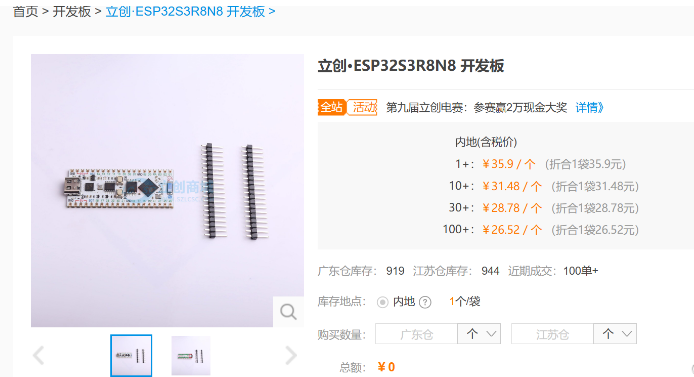
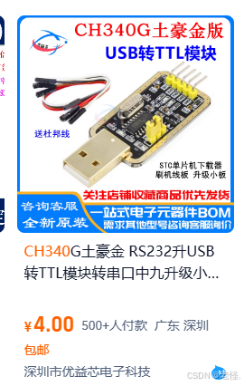
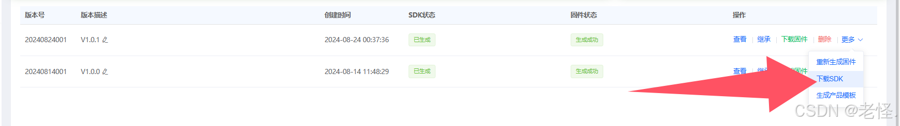

语音识别与播报
Update history
| Date | Version | Author | Update content |
|---|---|---|---|
| 2024-12-05 | 1.0.1 | 老怪鸽 | 更新了基本文档 |
硬件准备
SU-03T语音识别模块
购买地址：AI智能语音识别模块离线语音控制模块语音识别芯片声控模块SU-03T
ESP32S3开发板

购买地址：立创·ESP32S3R8N8 开发板
其他装备
- 喇叭：
8Ω0.5W的喇叭（这里因为我是做了PCB，所以是采用的立创商城的器件编号C530532，大家也可以自行采购便宜的）
购买地址： https://item.szlcsc.com/550866.html
- 麦克风：
灵敏度-32db（这里因为我是做了PCB，所以是采用的立创商城的器件编号C234013，大家也可以自行采购便宜的）
购买地址： https://item.szlcsc.com/233795.html
- 给语音模块下载的设备CH340：（这里因为我是做了PCB，搭了下载电路，大家也可以自行采购淘宝上卖的CH340模块，如下图）

硬件连接
我之前说过我是设计了电路的，不是单独的接模块，所以硬件部分我会介绍电路设计方面。
首先，因为语音模块需要有一个下载设备，这里直接将TYPE-C接口的数据接口接到了一个CH340N（图中的U9，编号C2977777）的器件上。接下来对各个器件进行说明。
- R56和R57是USB协议上要求的，必须是5.1K，涉及到PD诱骗电压输出，具体原因自行百度。
- D8和D7是ESD保护器件，防止静电的，防止静电损坏后级设备，也可以不用这些器件。
- VBUS通过一个短接符号连接到了5V，说明这个TYPE-C输入的是5V，是我的个人习惯，通常可以直接在USB处标记5V。
- U9就是之前说的CH340N，看数据手册，是一个将USB 转串口的芯片，而我们的语音识别模块就是通过串口下载。
- C26和C27，首先是C26，在CH340N的数据手册中指出：当CH340N的电压输入为5V时，必须在V3引脚处外接一个100nf的电容；VCC处尽量加一个100NF的电容。
- R27和D1，根据CH340N的厂家说明，为了防止与CH340N通信的设备，通过RXD和TXD引脚将电压反充给CH340，建议在RXD引脚上接入一个限流电阻，TXD上接一个反向二极管，防止电流电压倒灌。
- D2也是一个ESD器件，防止类似雷击，静电等导致的瞬间高压损坏设备，加入ESD器件后，可以有效防止瞬间的高压将设备烧毁。
总结：就是一个通过USB供电的同时，还可以通过USB给语音模块下载语音识别的固件
下面就是SU-03T语音识别模块的外围电路，下面是对各个器件的介绍：
- 因为这个语音识别模块在下载固件时，必须在保持断电的情况下，在电脑上点击下载，然后再通电才能够下载成功。为了实现这个断电下载操作，加了一个拨码开关（SW1）。
- C19的作用是储能，必须语音识别模块感觉还是电流消耗挺大的，加一个10UF的电容，在没有电流时就从C19供电。
- 语音采集的框图中的32DB只的就是这个麦克风是-32DB的一个麦克风，或者叫咪头。
- SPK1就是喇叭。
- 图中的03TTXD和03TRXD就是接到了CH340N的串口通信线上，语音固件就是通过这两根线进行固件下载。
- B2TX和B3RX是接到了开发板上的GPIO13和GPIO12，开发板将这两个引脚设置为串口通信，语音模块也将B2B3设置为串口通信，这样才可以数据互传。 这个很重要，因为该语音模块只能设置B2和B3为串口。
使用模块的接线图：
语音识别的命令词设置
新建产品
进入在线的配置平台： 智能公元零代码平台，没有注册的先注册然后登录。
去到产品管理下。
新建一个产品
产品配置.
语音信号处理配置
下面是我的配置截图：
引脚配置
引脚设置中，选择B2和B3为串口，串口的其他参数默认。
唤醒词配置
唤醒词的设置。该模块是一个二级语音命令的模块，类似与小爱同学，你得先通过唤醒词将模块唤醒，然后才能够进行下一步的语音命令。这里我设置了三个唤醒词，当语音模块识别到唤醒词时，会播报下面的唤醒回复。
命令词自定义
命令词自定义。图中的行为栏可以随便写不重要；但是触发方式栏得注意，命令词表示当识别到我们的语音命令时就会触发的意思，而串口输入，就是当接收到我们开发板通过串口发送给模块的特点格式的串口数据时，才会触发。命令词栏是当触发方式栏为命令词时才可以输入，输入的内容就是你要说什么语音，他才会触发这个命令，而|的意思就是可以设置多个命令词。当命令词被触发时，可以设置是否要语音模块进行回复，回复内容在回复语栏中配置。
点击控制栏：可以设置当命令触发时，需要控制语音模块做什么操作。
动作参数的设置方式：（GIF）
这里除了串口外，还可以设置其他的动作，大家自行了解。
我设置的控制参数如下。
语音表
帧头 数据 帧尾 说明
EF 00 FE 被语音唤醒，唤醒词：小豆小豆|小豆同学|你好小豆
EF 01 FE 识别到语音：当前温湿度|现在温湿度|现在的温湿度|温湿度是多少
EF 02 FE 识别到语音：当前时间|现在时间|现在的时间|现在是什么时候了|现在多少点了|现在时间是多少|报时
EF 03 FE 识别到语音：显示时间|切换时间界面|切换时间|显示时钟|切换时钟界面|切换时钟
EF 04 FE 识别到语音：显示天气|切换天气|切换天气界面|显示天气界面
EF 05 FE 识别到语音：显示温湿度|切换温湿度|切换温湿度界面|显示温湿度界面
EF 06 FE 识别到语音：显示数字雨|切换数字雨|切换数字雨界面|显示数字雨界面
EF 07 FE 识别到语音：显示频谱灯|显示音律灯|切换频谱灯|切换音律灯|切换频谱灯界面|切换音频灯界面|显示频谱灯界面|显示音律灯界面
EF 08 FE 识别到语音：显示切换|切屏|界面切换|切换界面|显示下一个
当开发板的串口接收到 EF 00 FE 时，说明语音模块触发了唤醒词命令；当开发板的串口接收到 EF 01 FE 时，说明语音模块触发了当前温湿度的命令。其它同理。为了方便接收并解析多条命令，这里设置成为了帧头帧尾的格式。当串口接收到FE说明语音识别模块触发了命令，分析上一个接收的数据，则可以知道是识别的哪一个命令。
例如：语音识别模块发来了命令：EF 04 FE
if( RX_BUFF[DATA_LEN] == 0XFE )//接收到帧尾
{
if( RX_BUFF[DATA_LEN-2] == 0XEF ) //确定上上个接收到的数据是帧头，确定数据格式正确
{
SU03T_data = cRX_BUFF[DATA_LEN-1]; //接收中间的数据
}
}
0X在代码中表示的是十六进制的数据，而语音模块发送的EF/FE等数据就是十六进制
除了以上的动作参数外，大家还记得之前设置的串口输入命令吗？当识别到我们设置的特殊格式的串口命令，语音模块将会被触发。,这个特殊格式的串口命令就是这这里设置的：
触发命令的配置步骤：( GIF )
这样当我们发送格式 AA 55 02 1A 46 55 AA 时，语音模块就会知道我们发送给它的数据是什么了。
| 帧头 | 消息编号 | 温度数据 | 湿度数据 | 帧尾 |
|---|---|---|---|---|
| AA 55 | 02 | 1A | 44 | 55 AA |
- 帧头帧尾是在引脚配置时，设置的。
- 消息编号是在设置触发时设置的。
- 而这个温度和湿度数据，表示的是发送一个
char型的变量，填充改数据。比如我们要将温度12，湿度70这两个数据发送给语音模块，需要先将数据转换为16进制，12的十六进制为0C，70的十六进制为46，则发送这个：AA 55 02 0C 70 55 AA，则语音模块就会知道，接收到了02号设备的数据 12 和 46了。
我们现在知道了接收数据的格式怎么发送了，接下来看看该命令的动作参数配置步骤：（GIF）
这里继承了之前接收到的数据变量 temp 和 humi，这个temp就是我们发送的温度数据，humi就是我们发送的湿度数据，
数据变量是在配置触发命令时设置的。
看图大家应该也知道了，就是模块接收到我们发送过去给它的特殊格式的串口数据时，它会取出其中的数据，并通过我们的设置将数据播报出来。比如拿之前的举的例子：
我们要将温度12，湿度70这两个数据发送给语音模块，需要先将数据转换为16进制，12的十六进制为0C，70的十六进制为46，则发送这个：AA 55 02 0C 70 55 AA，则语音模块就会知道，接收到了02号设备的数据 12 和 70了。当语音模块接收到数据后，又会根据我们的动作设置进行播报：
当前温度是 12 摄氏度，当前湿度是百分之 46
以下是我的两个串口命令表：
| 串口触发命令 | 播报的内容 |
|---|---|
| AA 55 01 hour min 55 AA | 当前时间为 hour 点 min 分 |
| AA 55 02 temp humi 55 AA | 当前温度是 temp 摄氏度，当前湿度是百分之 humi |
免唤醒词和误识别词配置
这里我没有配置太多，就配置了一个当前时间语音。可以不用触发唤醒词，直接说当前时间就可以触发。
发音人配置
大家选择一个自己喜欢的就好，然后音量方面，我个人认为音量有点大，就设置为了36%左右的音量。
其他配置
在 其他配置 中建议大家开启这个 开机播报功能，防止大家忘记唤醒词，所以可以通过开机播报，每次开机都让模块“自我介绍”。
其他的内容如下：完全不用管
发布新版本
点击发布新版本，这个平台就会去生成你自己的语音固件了，通常生成的时间比较久，得等大概10~30分钟左右。
下载固件和烧录软件
固件生成之后，去到你对应的产品管理下，下载你的固件。(GIF)
点击下载固件后，如图：（jx_firm (2).tar.gz就是语音固件）
这里需要注意，你还需要下载语音固件的烧录工具，烧录工具中更多下的下载SDK中。

SDK的下载：
语音固件的下载
在下载固件时，要先将模块断电。待下载工具识别到模块之后，再给模块通电，才可以正常下载。这个通断电操作，由原理图中的SW1开关进行控制。如果大家不是像我一样使用PCB连接的，那使用CH340模块给SU-03T供电，在下载前将VCC的电源拔掉，在软件上点下载之后再连接VCC。
具体的烧录步骤视频：视频地址
PIO工程创建
在VSCode中打开PlatformIO扩展创建名为voiceSu03t的 Espressif ESP32-S3-DevKitM-1 工程。
关于详细图文创建工程的过程请参考👉RTC时钟驱动章节的工程创建小节。
编辑代码
在工程里的src文件夹下，新建一个 voiceSu03t.cpp 文件。
在工程里的include文件夹下，新建一个 voiceSu03t.h 文件。
往voiceSu03t.cpp 文件中写入如下代码：
#include "voiceSu03t.h"
#include "stdio.h"
//串口中断服务函数，请务必在main.cpp中定义并且实现该文件
void IRAM_ATTR voiceSerialReceive();
VOICESU03T::VOICESU03T(int8_t uart_num, int8_t tx_pin, int8_t rx_pin, uint32_t baud_rate) {
_uart_num = uart_num;
_tx_pin = tx_pin;
_rx_pin = rx_pin;
_baud_rate = baud_rate;
switch (_uart_num) {
case 1:
serial = &Serial1;
break;
case 2:
serial = &Serial2;
break;
// 可以根据需要添加更多串口
}
}
//语音模块串口接口初始化
void VOICESU03T::begin() {
if (serial) {
serial->begin(_baud_rate, SERIAL_8N1, _rx_pin, _tx_pin);
// 注册中断服务例程
serial->onReceive(voiceSerialReceive);
}
}
//向语音模块发送串口数据
size_t VOICESU03T::write(uint8_t *data, size_t size) {
if (serial) {
return serial->write((const uint8_t *)data, size);
}
return 0;
}
//读取语音模块发送过来的串口数据
int VOICESU03T::read() {
if (serial) {
return serial->read();
}
return -1;
}
//当前接收到的语音模块内容缓存长度
int VOICESU03T::available() {
if (serial) {
return serial->available();
}
return 0;
}
void VOICESU03T::setState(int8_t state)
{
_state = state;
}
int8_t VOICESU03T::getState()
{
return _state;
}
//将10进制转换为16进制的HEX
//参数：decimal（传入的10进制数）
//返回：16进制hex
long VOICESU03T::decimalToHex_big(long decimal)
{
long hex = 0;
int i = 0;
char temp_buff[20];
sprintf(temp_buff, "%lX", decimal);//换为字符串的16进制
//根据字符串长度一直转换
for( i =0 ; temp_buff[i] != '\0'; i++ )
{
//如果是数字
if( temp_buff[i] >= '0' && temp_buff[i] <= '9' )
{
hex = (hex << 4) | temp_buff[i]-'0';
}
else//如果是字母
{
switch( temp_buff[i] )
{ //先左移再转换
case 'A': hex = (hex << 4) | 0x0A; break;
case 'B': hex = (hex << 4) | 0x0B; break;
case 'C': hex = (hex << 4) | 0x0C; break;
case 'D': hex = (hex << 4) | 0x0D; break;
case 'E': hex = (hex << 4) | 0x0E; break;
case 'F': hex = (hex << 4) | 0x0F; break;
}
}
}
return hex;
}
//发送语音播报当前时间的命令
//hour=小时数据,min=分钟数据
void VOICESU03T::voiceSpeechTime(long hour, long min)
{
unsigned char sendBuff[7] = { 0xAA, 0X55, 0X01, 0X00, 0X00, 0X55, 0xAA };
sendBuff[3] = decimalToHex_big(hour);
sendBuff[4] = decimalToHex_big(min);
write(sendBuff, 7);
}
//发送语音播报当前温湿度的命令
//temp=温度数据,humi=湿度数据
void VOICESU03T::voiceSpeechHumiture(long temp, long humi)
{
unsigned char sendBuff[7] = { 0xAA, 0X55, 0X02,0X00, 0X00, 0X55, 0xAA };
sendBuff[3] = decimalToHex_big(temp);
sendBuff[4] = decimalToHex_big(humi);
write(sendBuff, 7);
}
往voiceSu03t.h 文件中写入如下代码：
#ifndef VOICESU03T_H
#define VOICESU03T_H
#include "HardwareSerial.h"
class VOICESU03T {
public:
VOICESU03T(int8_t uart_num, int8_t tx_pin, int8_t rx_pin, uint32_t baud_rate);
void begin();
size_t write(uint8_t *data, size_t size);
int read();
int available();
void setState(int8_t state);
int8_t getState();
long decimalToHex_big(long decimal);
void voiceSpeechTime(long hour, long min);
void voiceSpeechHumiture(long temp, long humi);
private:
HardwareSerial *serial;
int8_t _uart_num;
int8_t _tx_pin;
int8_t _rx_pin;
uint32_t _baud_rate;
int8_t _state;
};
#endif // ESP32_EXTRA_UART_H
往 main.cpp 文件中写入以下代码：
#include <Arduino.h>
#include "voiceSu03t.h"
//语音识别模块定义
#define VOICE_PORT 1 //语音识别模块使用的串口
#define VOICE_TX_PIN 12 //语音识别模块使用的串口TX引脚
#define VOICE_RX_PIN 13 //语音识别模块使用的串口RX引脚
#define VOICE_TX_BAUDRATE 9600 //语音识别模块使用的串口波特率
//创建语音识别对象
VOICESU03T Su03t(VOICE_PORT, VOICE_TX_PIN, VOICE_RX_PIN, VOICE_TX_BAUDRATE);
char su03t_rx_buff[20];
char su03t_rx_len;
//虚拟温湿度数据
int temperature = 26;
int humidity = 70;
//虚拟时间数据
int hour = 12;
int minute = 59;
/* 语音表
帧头 数据 帧尾 说明
EF 00 FE 被语音唤醒，唤醒词：小豆小豆|小豆同学|你好小豆
EF 01 FE 识别到语音：当前温湿度|现在温湿度|现在的温湿度|温湿度是多少
EF 02 FE 识别到语音：当前时间|现在时间|现在的时间|现在是什么时候了|现在多少点了|现在时间是多少|报时
EF 03 FE 识别到语音：显示时间|切换时间界面|切换时间|显示时钟|切换时钟界面|切换时钟
EF 04 FE 识别到语音：显示天气|切换天气|切换天气界面|显示天气界面
EF 05 FE 识别到语音：显示温湿度|切换温湿度|切换温湿度界面|显示温湿度界面
EF 06 FE 识别到语音：显示数字雨|切换数字雨|切换数字雨界面|显示数字雨界面
EF 07 FE 识别到语音：显示频谱灯|显示音律灯|切换频谱灯|切换音律灯|切换频谱灯界面|切换音频灯界面|显示频谱灯界面|显示音律灯界面
EF 08 FE 识别到语音：显示切换|切屏|界面切换|切换界面|显示下一个
*/
void voiceAnalysis(char* rx_buff)
{
if( rx_buff[0] == 0XEF )
{
if( rx_buff[2] == 0xFE )
{
Su03t.setState(rx_buff[1]); //接收语音模块格式帧的关键数据
switch (rx_buff[1])
{
case 0x01://当前温湿度|现在温湿度|现在的温湿度|温湿度是多少
Su03t.voiceSpeechHumiture(temperature,humidity);
break;
case 0x02://当前时间|现在时间|现在的时间|现在是什么时候了|现在多少点了|现在时间是多少|报时
Su03t.voiceSpeechTime(hour,minute);
break;
case 0x03://显示时间|切换时间界面|切换时间|显示时钟|切换时钟界面|切换时钟
Serial.printf("显示时间界面");
break;
case 0x04://显示天气|切换天气|切换天气界面|显示天气界面
Serial.printf("显示天气界面");
break;
case 0x05://显示温湿度|切换温湿度|切换温湿度界面|显示温湿度界面
Serial.printf("显示温湿度界面");
break;
case 0x06://显示数字雨|切换数字雨|切换数字雨界面|显示数字雨界面
Serial.printf("显示数字雨界面");
break;
case 0x07://显示频谱灯|显示音律灯|切换频谱灯|切换音律灯|切换频谱灯界面|切换音频灯界面|显示频谱灯界面|显示音律灯界面
Serial.printf("显示频谱灯界面");
break;
case 0x08://显示切换|切屏|界面切换|切换界面|显示下一个
Serial.printf("界面切换");
break;
default:
break;
}
}
}
}
// 定义一个语音识别串口的中断服务函数
void voiceSerialReceive()
{
// 当有数据到达时，此函数会被调用
while (Su03t.available())
{
// 读取数据
su03t_rx_buff[su03t_rx_len++] = Su03t.read();
if( su03t_rx_len >= 3 ) //如果数据长度超过要求
{
voiceAnalysis(su03t_rx_buff); //数据解析并执行对应功能
for(int i=0;i<10;i++)su03t_rx_buff[i] = 0;//清除接收的数据
su03t_rx_len = 0;//接收数据的长度清零
}
}
}
void setup()
{
Serial.begin(9600); //调试串口初始化
Su03t.begin(); //语音模块串口初始化
}
void loop()
{
delay(50);
}
代码验证
代码编写完成之后，将ESP32S3开发板接入电脑下载代码，然后对语音模块说命令词查看现象。
下载步骤请参考👉RTC时钟驱动章节的代码验证小节。
实验现象：对语音模块说我们之前设置的命令都是有响应回复的
当前例程中的温度、湿度、小时、分钟等数据都是固定的，是假的。大家自行调整
现象视频：https://live.csdn.net/v/embed/421316
说明：如果你根据代码操作运行不起来，可以下载👉例程看看